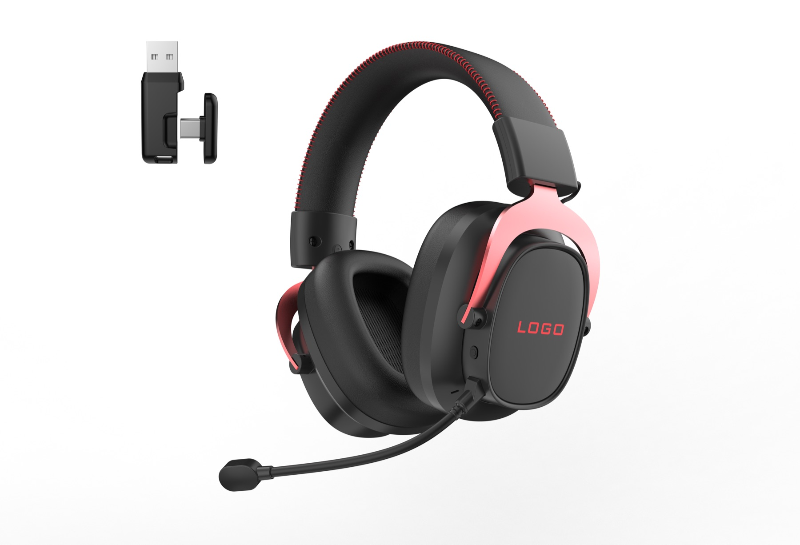
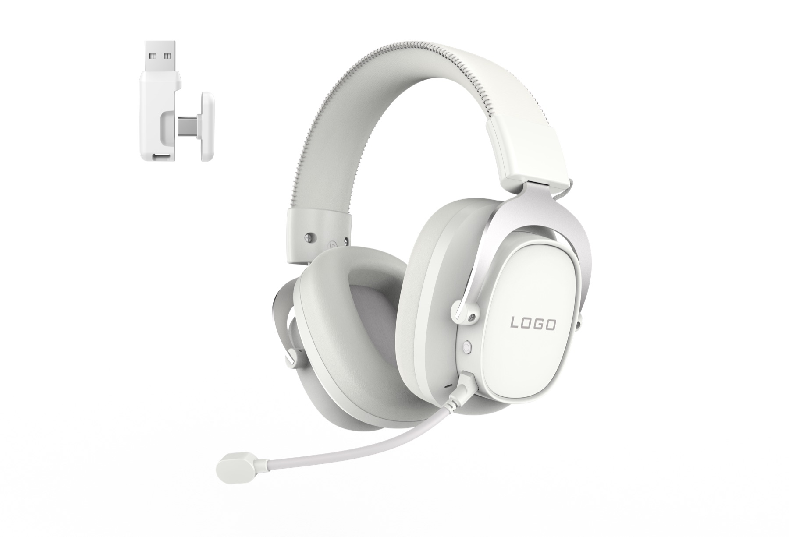

Packaging material storage
Which carton, insert and manual belong to this version?

Product evidence
A photo can show the connector. It cannot tell you how the microphone sounds. Match the product version first, then separate visible details from functions that need a sample check.

Quick answer
Before sampling
Workshop references
These supplied process photos provide context, not proof of factory size, capacity, certification or completed test results. Ask which checks apply to your sample and what records are available.
Which carton, insert and manual belong to this version?

Which charging checks and records apply to this sample?

What is checked, by which method, and where is the sample result recorded?

Confirm the cable, connector and agreed test method; the fixture image does not show a pass result.

How are cables, hardware and accessories matched to the sample version?
G941 example
Confirm the frame and color against the G941 model page. These images do not establish every available finish, receiver or accessory set.
Check the finish, accents and boom arrangement.

Confirm the sample finish and matching accessories.
FAQ
Visible shape, color, connectors, microphone structure and accessory layout. Match every image to the selected model version.
Sound, microphone behavior, fit, controls and device compatibility need sample checks. Photos alone do not establish battery life or latency.
Start with the model page, then use the microphone, packing and sample-review guides for the functions and accessories you need to verify.
Send the model or product link, target device and market, plus the photo detail or function you want checked.
No. They show process context, not factory size, capacity, certification or completed test results. Request separate supporting evidence.
Useful pages
Share the model, destination market, quantity range and the product, packaging or document details that still need verification.